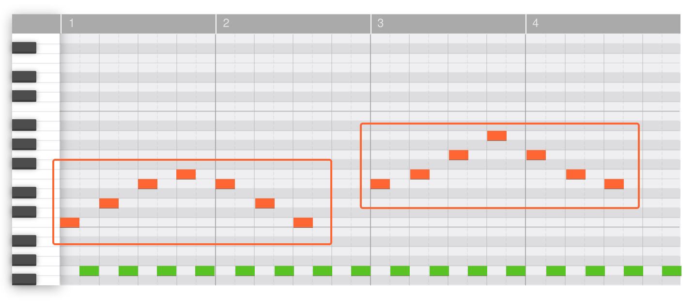

1. 什么是旋律
1. 什么是旋律
在正式开启旋律理论的学习之前，我们不妨重新审视一下：到底什么是“旋律”？旋律（Melody），简而言之就是我们在听觉上将音在时间维度上的横向延伸感知为一条线条。

这是大家熟悉的儿歌《青蛙合唱》的开头，用钢琴做了简易演奏。在乐理分析中，我们会将高音谱表上“Do Re Mi Fa Mi Re Do”的横向线条界定为“旋律”，而将低音谱表上“Do-Mi-Sol”的连续伴奏柱式或分解视为“伴奏”，并将它们分离开来进行探讨。

探讨和弦如何连接是“和弦理论（和声论）”的范畴，而旋律论则专注于探讨单音之间的横向连接规律。
旋律的认知
那么，如果像伴奏那样只是“咣咣”地弹奏和弦块，是不是就不会产生旋律呢？事实并非如此。在实际演奏中，最显眼的音符往往会自然地在听觉中连接起来，被认知为旋律。
来自顶音（Top Note）的旋律
这里并没有像刚才《青蛙合唱》那样明确区分旋律与伴奏，只是连续弹奏着几个和弦。但如果把各个和弦中最高的音串联起来，就会发现它们恰好是“Do Re Mi Fa Mi Re Do”，不知不觉中，你的耳朵就会将其听作是一条旋律。
和弦中最高的音被称为顶音（Top Note）。顶音之间的连续流动完全足以被我们的大脑识别为旋律。
完形分组（Grouping）产生的旋律
反过来，哪怕是单一乐器连续弹奏单音，其中的一部分音符有时也会被大脑“自作主张”地归入伴奏声部。
这里虽然弹奏的是“Do-Sol Re-Sol Mi-Sol Fa-Sol……”，但中间穿插的“Sol”似乎总被我们当作装饰性的衬音，耳朵会不由自主地去追寻“Do-Re-Mi-Fa-Mi-Re-Do……”这一《青蛙合唱》的主干乐句。


无论谁来听，这显然都是在演奏《青蛙合唱》，听感上别无二致。如果有人声称“我弹的是 Do-Sol-Re-Sol-Mi-Sol-Fa-Sol，所以这是一首新作品”并公开发行，恐怕免不了要吃到侵权投诉的苦头。
也就是说，旋律是我们在音乐中“主动发现并勾勒出的线条”。只要在音乐中能浮现出线条感，它就可以被称为旋律[1]。
旋律 (Melody) : 在时间维度上相继出现的、伴有音高且在听觉上被感知为一个连贯线条整体的单音序列[83]。
……虽然聊得稍微带了点哲学意味，但落实到实际创作中就是：伴奏乐器的演奏同样在勾勒旋律线条，因此这里所学的旋律理论不仅适用于主旋律，对构思伴奏的织体乐句（Phrasing）也大有裨益！
贝斯线条（Bass Line）
上面我们做了一个“旋律 vs 伴奏”的粗略二分法，而在准备篇中，我们曾将现代音乐的架构划分为四个层次：打击乐（Drums）、低音部（Bass）、中高层乐器（ウワモノ / Harmony & Pads）、旋律（Melody）。

伴奏更细致地拆分，就是鼓、贝斯和中高层织体。
其中，“贝斯”同样是由单音构成的横向序列，但它通常被称为贝斯线条（Bass Line）。从上述广义的定义来看，贝斯线条也可以算作一种旋律，但由于它在音乐中所承担的职能、音区特性与乐句构造截然不同，在实践中基本不会将贝斯线条直呼为“旋律”。在理论体系中，它更多地被定性为承载并构筑和声根基的存在，因而属于完全独立的课题。在旋律篇中，我们基本不会涉及贝斯声部的具体运动。
副旋律（Counter-melody）
与被单独对待的“贝斯”相对，中高层织体声部在充当伴奏的同时演奏旋律则是极为常见的。
在这首歌曲开头的副歌部分，除了正中间传来的人声主旋律外，左右两侧还演奏着弦乐线条。甚至这段弦乐线条的起伏比主人声旋律还要激烈。
这段弦乐虽然属于“伴奏”，在四层分类中归属于“中高层乐器”，但与此同时它本身也是一条完整的旋律。这种起到辅助、烘托作用的旋律被称为副旋律 / 对位旋律（Counter-melody）。
副旋律能让音乐瞬间变得层次华丽、饱满丰富，但如果它过于突出甚至喧宾夺主地干扰了主旋律，就会适得其反。因此在音色选择、音量平衡和立体声空间声像（Panning）上需要具备良好的平衡感。
2. 旋律篇各章概要
市面上大多数通用乐理资料中关于旋律的内容往往篇幅甚少，或者一开始就直接冠以“和弦理论（和声学）”之名，因此提起“旋律理论”，大家可能一时难以想象它的具体内容。这里我们先将本篇五个章节的脉络与重点做一梳理：
第 I 章：掌握词汇与核心概念
正如序论中所提到的，音乐理论是对声音的“数字化与语言化”，是将无形的音乐转化为易于理解和传递的信息的工具。在第 I 章中，我们首先要对旋律的运动方式进行语言化界定。
例如《青蛙合唱》的旋律是一条“从容上行再缓缓回落”的线条，我们将对这一连串的每一个细微动势赋予明确的术语命名。掌握了这些，你就能用清晰精确的语言，剖析传世名曲或你钟爱的歌曲旋律到底具备怎样的形态特征。
随后，我们将深入剖析平时容易被忽略的——旋律中每一个音所蕴含的音响心理效应。为什么上面的旋律从 Do 开始又以 Do 结束？为什么在中途会以 Fa 为转折点走向 Mi？你将从理性语言层面彻底领会其背后的机理。
第 II 章 / 第 IV 章：和弦与旋律的共生关系
第 II 章是旋律理论的核心精髓所在，探讨的是和弦与旋律交织碰撞产生的交互关系。
《青蛙合唱》的开头，是在“Do-Mi-Sol”的和弦上叠加“Do”音开始的。在“Do-Mi-Sol”和弦上方配上“Do”，听感是这样的；那么如果换成配“Re”，或者配“Mi”，声音色彩又会发生怎样的化学反应？第 II 章将深化这一组合论。仅凭掌握这一章的内容，你在进行曲目扒谱分析时所能看清的深层信息量就会发生质的飞跃。
到了第 IV 章，我们将顺着这一脉络，进一步深入探讨更精细复杂的结合形态。
第 III 章：拓展音阶知识版图
第 III 章换了个视角，将带你全方位领略五彩斑斓的各种调式与音阶。正如准备篇中所展示的那样，仅仅更替了音阶，就能构筑出截然不同氛围的音乐宇宙。
典雅古典风的音阶
异域民族风的音阶
布鲁斯 / 爵士风的音阶
诡谲离奇氛围的音阶
以上这些都是单凭自然大调/自然小调音阶所无法营造的独特世界观。本章的主旨就是通过认知更多音阶来极大地拓展你的音乐表现维度。
第 V 章：将为旋律编配和弦的过程理论化
第 V 章具有极强的专业性与实战度，我们将彻底理论化“先有旋律，再为其编配和弦（Harmonize）”的思维与操作过程。

上图选自第 V 章，展示了“当旋律音为 Do 时，究竟可以为其编配哪些不同和弦”的思维导图。这是一套专为希望凭借系统理论掌控一切和声搭配的创作者量身定制的高阶内容。
与和弦篇相比，旋律篇第 I~II 章具有鲜明的“门槛相对轻松，但在实战中立竿见影”的超高性价比；而从第 III 章起，内容难度会逐渐提升，逐渐迈向深度硬核的技术殿堂。
3. 旋律理论与直觉感性
一提到“把旋律也纳入理论体系”，某些创作者可能会感到一种拘束与压迫感。确实，在传统古典理论中充斥着“出现这种进行必须接那个音”的戒律，爵士理论中也常有“在某和弦下切勿长音停留在某音”的规则。然而，“自由派”乐理绝不推崇这种条条框框。理论自始至终只是辅助和启发我们感性与审美的“工具”。
例如，Suga Shikao（菅止戈男）和 Mr.Children 的樱井和寿等顶尖旋律大师，都曾坦言自己在分析与创作旋律时会积极借助音乐理论：
随着和弦的行进推进，对于根音而言你到底喜欢几度音，怎样让那个度数的音听起来最舒服悦耳，创作者其实都有着强烈的个人偏好。这种偏好决定了你的旋律走向。比如，如果你钟爱大六度（6th）的色彩，潜意识里就会构筑出能让六度音听感最美妙的旋律线，久而久之就演化成了你个人的旋律习惯。例如在几度音上习惯性使用长音拉伸等等，往往出奇一致。关于这一点我是听樱井（和寿）聊起的，他真的是一个在音乐思维上极其深邃的人。
菅止戈男《爱与幻想的 Les Paul》（Kindle 位置 No.203-209）
虽然这段话涉及一些术语，但可以看出其中提到了我们在准备篇中学过的“大调”“六度”等概念。菅止戈男正是通过理论对自己的旋律习惯保持敏锐自觉，从而能够有意识地打破套路、跳出创作瓶颈。
理论既可以用来帮你打破思维定势，也可以用来将你的下意识习惯提炼凝固为你独树一帜的个人辨识度。
不是背诵，而是“体悟与内化”
旋律理论通过将旋律的结构分解为音高、长度、相对位置、连接动势等独立要素，使纷繁复杂的现象变得条理分明。这就像篮球教练在拆解投篮姿势时，会分别讲解手掌、手腕、肘部与膝盖的发力配合。单个环节的动作分解开来都看似简单明了，可一旦真正投入实战创作，旋律是所有这些要素的瞬时合力与联动，世界极其精妙复杂。因此，“脑子里都懂理论要点，可自己动手写歌时根本来不及理论化思考，无法面面俱到”是极其普遍的正常现象。
但这丝毫不成问题，大脑中具备了一把能够剖析旋律的“标尺”，这本身就蕴含着不可估量的价值。仅仅因为拥有了这把标尺，你聆听音乐、鉴赏分析时的敏锐度与所能汲取的信息密度就会发生翻天覆地的跃迁。在日复一日的创作与敏锐分析中，你对旋律的直觉感性将得到千锤百炼的淬炼。
因此对于旋律理论而言，把知识“看懂并记住”绝非终点，仅仅是起跑线；我们需要的是假以时日，将其融入肌肉记忆般地“体悟并内化”。就如同体育运动中“科学合理的动作规范”与“临场灵感与球商”相辅相成、互为表里一样，旋律的理论与感性同样是一体两面。把理论融会贯通为内在直觉，正是通往顶尖音乐审美的最快捷径。